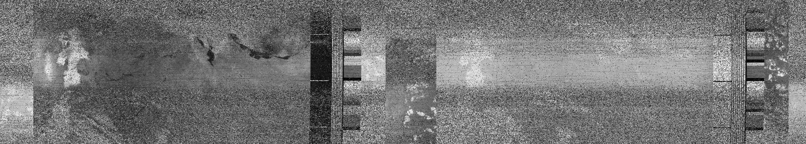
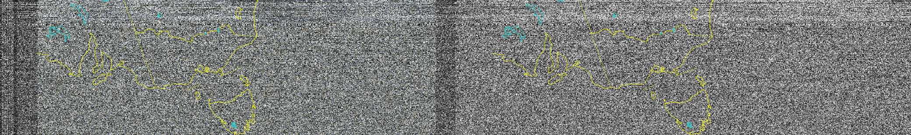
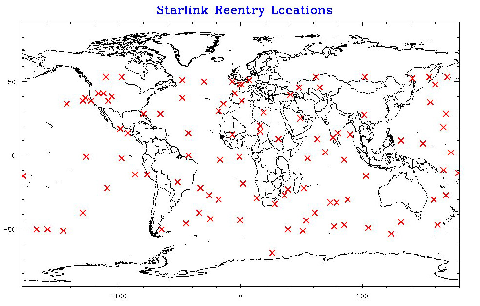
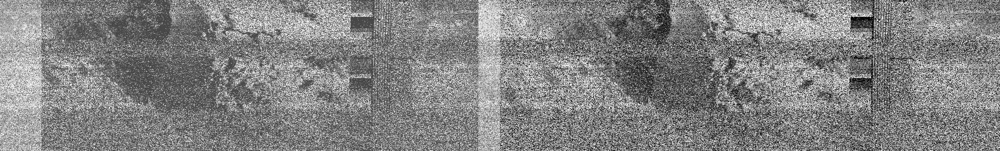
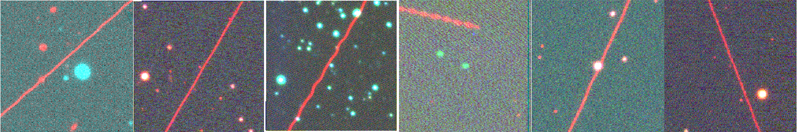

On 23rd May 2019, the first train of Starlink satellites sailed into the atmosphere in a line too ordered to be natural and too fast to belong amongst the stars. These dotted lines of reflected sunlight point the way to a network, thousands strong, of communication satellites currently encircling the globe in Lower Earth Orbit (LEO). Our project uses the natural intelligence of the Solar Protocol network to reflect back the inherent unsustainability of this idealised new era in connectivity.
Rather than being treated as a global commons, LEO is an extension of the airwaves dominated by tech giants. These ‘megaconstellations’, developed by SpaceX, Amazon, WebOne and Telesat, endeavour to bridge the digital divide by providing fast-speed internet to remote locations but in doing so they create an exponentially crowded orbital space and contaminated astronomical data that limits pathways to interplanetary exploration.
While SpaceX is celebrated for implementing the first reusable rocket, the launch system relies on indefinite emissions of carbon-based fuel in the face of our current climate disaster. The anticipated life expectancy of an individual Starlink module is about 5 years before it, at best, de-orbits and burns up entirely upon re-entry. Rather than longevity, this planned obsolescence is designed for constant upgrade and resupply of satellites in a model of consumption disproportionate to the immense cultural, political, and environmental impacts of an infrastructure that literally expands beyond our world.
This work tracks the passage of SpaceX satellites above the active Solar Protocol server and displays the remaining lifespan of each satellite from the day it was launched. We use a server powered by the logic of the sun to illuminate the invisible decay of Starlink satellites, rather than their shiny beginnings.
While leaving blatant traces while in orbit, what physical traces will these satellites leave in their wake? The burn up of material will deposit fine aluminium particles into the atmosphere at a scale far beyond natural quantities, thus activating a process of altering the Earth’s albedo with unknown consequences. What are the consequences of this when these infrastructures are striving for infinite growth?
The omnipresence of digital connection should not come at the expense of our sky, and risks blinding us from the vital natural connections between earth, atmosphere and sun that we need to survive.
